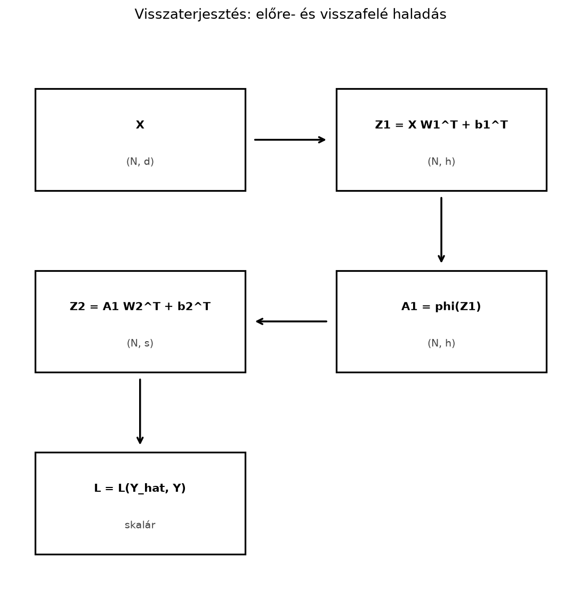
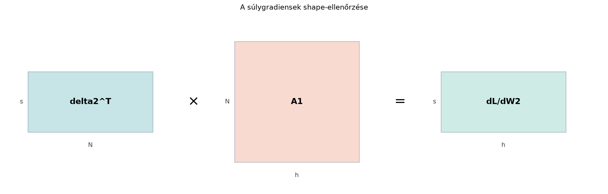

Amikor a neurális hálót tanítjuk, a gradiensmódszerhez a veszteségfüggvény összes paraméter szerinti parciális deriváltjára van szükségünk. Egy többrétegű hálóban a paraméterek nem függetlenek: az első réteg súlyainak hibája csak a második rétegen át jut el a veszteségig. Ha a deriváltakat naivan, rétegenként külön-külön számolnánk, rengeteg redundáns műveletet végeznénk.
A visszaterjesztés nem új matematikai tétel, hanem a láncszabály mátrixos, hatékony megszervezése. Ugyanazt az érzékenységet számoljuk ki először a kimeneti rétegre, majd ezt visszafelé „terítjük” a rejtett rétegeken és a bemenet felé. A cél most az, hogy ezt a folyamatot egy kétrétegű dense hálóra, batch-feldolgozás mellett, mátrixméret-ellenőrzéssel együtt levezessük.
Tekintsünk egy olyan hálót, amelynek bemenete , első rejtett rétege , kimenete , és a vesztesége . Az előrehaladás során az adatok balról jobbra áramlanak; a visszaterjesztés során a gradiens-információ jobbról balra halad.

Az ábrán a batch mérete, a bemeneti jellemzők száma, a rejtett réteg szélessége, a kimeneti dimenzió. A visszafelé menetben definiáljuk a érzékenységet a pre-aktivációra, abból a -et a -re, és ezekből már minden súlygradiens mátrixszorzással adódik.
A shape-ábra ugyanazt a logikát mutatja a súlygradiensekre:

Az első réteghez hasonlóan a szorzat adja a gradiensét, mérettel.
A veszteségfüggvény a háló paramétereitől közvetetten, a rétegek pre-aktivációin keresztül függ. A legfontosabb köztes mennyiség a veszteség deriváltja a pre-aktiváció szerint.
Definíció.
Legyen
egy dense réteg pre-aktivációja, azaz
,
és legyen
a skalár veszteség. A réteghez tartozó
érzékenységmátrix (delta) az a
mátrix, amelynek elemei
A tehát ugyanolyan alakú, mint , és azt mondja meg, hogy a pre-aktiváció egységnyi megváltozása mennyire változtatja meg a veszteséget.
A visszaterjesztés nem más, mint a láncszabály alkalmazása: először kiszámítjuk a kimeneti réteg érzékenységét, majd abból a megelőző réteg -ét, végül a súlygradienseket.
Legyen egyetlen dense rétegünk:
ahol , , , és . Itt a bemeneti, a kimeneti dimenzió (a 19.1–19.2. alfejezet és mennyiségei). A veszteség skalár. Feltesszük, hogy már ismert.
Állítás.
A fenti jelölésekkel
Itt , , ezért a szorzat méretű, vagyis éppen mérete. A bias gradiensénél az -edik mintához tartozó dimenziós sor.
Bizonyítás.
Először a
-re
vonatkozó állítást vezetjük le elemenként, utána röviden a másik kettőt.
A mátrixszorzás definíciója szerint
A láncszabállyal
Mivel a elemei közül csak -re függ a -től, és akkor
a belső összeg egyetlen tagra egyszerűsödik:
A jobb oldal éppen a -edik oszlopa és az -edik oszlopa közötti skalárszorzat, azaz a mátrix eleme. Ezzel
A bias gradiensénél , tehát
ami a oszloponkénti összege. A bemeneti gradiens levezetésénél pedig , így
ami a mátrixszorzás eleme.
Most alkalmazzuk a szabályt egy kétrétegű hálóra. Legyen a rejtett réteg aktivációja , a kimeneti réteg lineáris (regresszióhoz). A batch-alakú számítás:
Az szorzó a deriválás kényelmét szolgálja: így a szerinti deriváltból eltűnik a 2-es. A külső a minták szerinti átlagolás; a belső összegzés a kimeneti dimenzió felett fut, ezért a kimeneti érzékenységben nem jelenik meg tényező. A kódban ennek megfelelően a kimenetek felett összegzünk, és csak -nel osztunk, nem -sel.
Konvenció-megjegyzés. A veszteség szerint átlagol a minták felett, a kimenetek felett viszont összegez. Ha L2-büntetőtagot adunk hozzá, a regularizált veszteség , ahol . Mivel , a gradiens
A teljes gradienssel végzett frissítés ezért
azaz a regularizáció a súlyok zsugorítása (weight decay), amelynek erőssége a tanulási rátával és a veszteség skálázásával együtt értelmezendő. A batchméret szerinti átlagolás miatt ugyanaz a más hatást ad, mint egy összegzett veszteségnél; a weight decay és az L2-tag azonossága csak a megfelelő átskálázással érvényes.
Visszafelé haladás lépései:
Kimeneti réteg érzékenysége:
A kimeneti réteg paramétereinek gradiense:
A rejtett réteg pre-aktivációjának érzékenysége:
A láncszabály szerint a -re úgy hat a veszteség, hogy előbb -re, onnan -re, onnan a veszteségre. A szerinti érzékenységet a -vel visszaszorozzuk, és megszorozzuk az aktiváció deriváltjával, amelyet elemenként alkalmazunk:
ahol a az elemenkénti (Hadamard-) szorzatot jelöli. Itt , , ezért a szorzat , ugyanakkora, mint .
Az első réteg paramétereinek gradiense:
Ezzel a kétrétegű háló összes paraméterének gradiensét megkaptuk. A gyakorlatban a köztes , értékeket az előrehaladás során el kell mentenünk, mert a visszafelé haladás felhasználja őket.
A kétrétegű példa rekurziója tetszőleges mélységre kiterjeszthető. Legyen , és a rétegekben
ahol elemenként hat. Jelölje a -edik preaktiváció szerinti érzékenységet. A kimeneti rétegnél a veszteség és a kimeneti aktiváció deriváltjából adódik; például softmax és kereszt-entrópia esetén .
Ezt az utóbbi képletet röviden le is vezetjük. Egy minta esetén legyen , ahol , és , ahol (a sorai one-hot kódolásúak). A softmax deriváltja
ahol a Kronecker-delta (1, ha , egyébként 0). Ezért a láncszabály szerint
A batch átlagolása miatt ez -vel szorzódik, mátrixalakban tehát . A visszafelé haladás rekurziója:
ahol az elemenkénti szorzat. A paramétergradiensek:
Miért hatékony? A naiv megközelítés minden paraméterre külön numerikus deriváltat számolna, ami forward kiértékelést igényelne, ahol a paraméterek száma. A visszaterjesztés egyetlen forward és egyetlen backward menetben megkapja az összes gradienst; a backward költsége nagyságrendileg a forward költségének kétszerese, nem függ a paraméterszámtól külön. A rekurzióban szereplő szorzat ugyanazt a transzponált súlymátrixot használja, amelyet a forward lépés is, ezért a tárolt aktivációkkal (, ) a gradiensek újraszámítás nélkül előállíthatók. Ez a „rengeteg redundáns művelet” elkerülésének matematikai magyarázata.
Oszlopvektoros, egyetlen mintás alakban a dense réteg . A láncszabály szerint
ahol . Tehát a hibát a transzponáltja viszi vissza a bemenet felé. Ez nem véletlen: az előrehaladás a bemeneti teret a súlymátrixszal képezi le a kimeneti térbe, a visszafelé terjedő gradiens pedig a transzponált leképezéssel halad: az a leképezés viszi vissza a kimeneti tér vektorait a bemeneti térbe, amely mellett a skalárszorzatok változatlanok maradnak.
Batch-alakban ugyanez a mátrixszorzás más sorrendben jelenik meg, mert a minták sorvektorként állnak az -ben, és a pre-aktiváció . Ezért a bemeneti gradiens
A kettő valójában ugyanaz: az oszlopvektoros a mátrixos batch-alakban transzponálás nélküli jobbról szorzássá válik. A súlygradiens pedig mindkét esetben külső szorzatok összege; batch-alakban ez , ami az -edik mintára vett külső szorzatok összege.
Vegyünk egy kis kétrétegű hálót , , , méretekkel. Legyen a rejtett aktiváció , azaz , és a kimenet lineáris. A bemenő adatok és a súlyok:
Előrehaladás. Először kiszámítjuk a pre-aktivációt:
Mivel
a szorzat:
A bias hozzáadásával:
Mivel minden elem pozitív, a ReLU azonosságként viselkedik, tehát
A kimeneti pre-aktiváció:
Itt , tehát
és hozzáadásával:
A veszteség:
Visszafelé haladás. A kimeneti érzékenység:
A gradiense:
A gradiense:
Most a rejtett réteg érzékenysége. Mivel a ReLU, és minden pre-aktiváció pozitív, minden eleme . Így
Az első réteg paramétereinek gradiense:
és
Minden gradiens mérete megegyezik a megfelelő paraméter méretével, ami egy fontos önellenőrzés.
Az alábbi kód a fenti kézi példát számolja ki, majd numerikus gradiensellenőrzést végez a egyik elemére.
import numpy as np
# Fix kézi példa
X = np.array([[1.0, 2.0, 3.0],
[4.0, 5.0, 6.0]])
Y = np.array([[1.0],
[2.0]])
W1 = np.array([[1.0, 0.0, -1.0],
[0.0, 1.0, 0.0]])
b1 = np.array([3.0, 1.0])
W2 = np.array([[2.0, -1.0]])
b2 = np.array([1.0])
def forward(X, W1, b1, W2, b2, Y):
Z1 = X @ W1.T + b1
A1 = np.maximum(0.0, Z1) # ReLU
Z2 = A1 @ W2.T + b2
L = 0.5 * np.sum((Z2 - Y) ** 2) / X.shape[0]
return Z1, A1, Z2, L
Z1, A1, Z2, L = forward(X, W1, b1, W2, b2, Y)
# Analitikus visszaterjesztés
N = X.shape[0]
delta2 = (Z2 - Y) / N
dW2 = delta2.T @ A1
db2 = delta2.sum(axis=0)
relu_grad = (Z1 > 0).astype(float)
delta1 = (delta2 @ W2) * relu_grad
dW1 = delta1.T @ X
db1 = delta1.sum(axis=0)
print("delta1 =\n", delta1)
print("dW1 =\n", dW1)
print("db1 =", db1)
print("dW2 =", dW2)
print("db2 =", db2)
# Numerikus gradiensellenőrzés W2[0,0]-ra
eps = 1e-6
W2_orig = W2.copy()
W2[0, 0] += eps
_, _, _, Lp = forward(X, W1, b1, W2, b2, Y)
W2[0, 0] -= 2 * eps
_, _, _, Lm = forward(X, W1, b1, W2, b2, Y)
W2[0, 0] = W2_orig[0, 0]
num_grad = (Lp - Lm) / (2 * eps)
print("Numerikus gradiens:", round(num_grad, 4))
print("Analitikus gradiens:", dW2[0, 0])
print("Egyezik (1e-6 tűréssel)?", abs(num_grad - dW2[0, 0]) < 1e-6)Várt kimenet:
delta1 =
[[-1. 0.5]
[-5. 2.5]]
dW1 =
[[-21. -27. -33. ]
[ 10.5 13.5 16.5]]
db1 = [-6. 3.]
dW2 = [[ -3. -16.5]]
db2 = [-3.]
Numerikus gradiens: -3.0
Analitikus gradiens: -3.0
Egyezik (1e-6 tűréssel)? TrueA numerikus és az analitikus gradiens eltérése jóval kisebb -nál (a pontos érték a lebegőpontos kerekítéstől függ, jellemzően körüli), ez a numerikus differenciálás természetes hibája. Ez megerősíti, hogy a levezetett mátrixalak helyes.
Az első példa azonban egyetlen kimenetet () és csupa pozitív ReLU-preaktivációt használt, ezért az átlagolási tényezőt és a ReLU-maszkot nem igazán tette próbára. A következő ellenőrzés két kimenettel (), mintával és rejtett egységgel dolgozik, ezért ; a mátrixban pozitív és negatív elem is van, de egyik sem nulla, tehát a ReLU töréspontjától távol vagyunk. Az analitikus gradienst mind a négy paramétercsoport () egy-egy nemnulla elemére hasonlítjuk a numerikushoz; így egy elrontott transzponálás, egy hiányzó tényező vagy egy rossz maszkpozíció biztosan eltérést okoz.
import numpy as np
X2 = np.array([[1.0, 0.0],
[0.0, 1.0],
[1.0, 1.0]])
Y2 = np.array([[0.0, 1.0],
[1.0, 0.0],
[0.0, 0.0]])
W1b = np.array([[1.0, -1.0],
[-1.0, 1.0]])
b1b = np.array([0.5, 0.5])
W2b = np.array([[1.0, 2.0],
[3.0, 4.0]])
b2b = np.array([0.1, -0.2])
def forward2(X, W1, b1, W2, b2, Y):
Z1 = X @ W1.T + b1
A1 = np.maximum(0.0, Z1)
Z2 = A1 @ W2.T + b2
L = 0.5 * np.sum((Z2 - Y) ** 2) / X.shape[0]
return Z1, A1, Z2, L
Z1b, A1b, Z2b, Lb = forward2(X2, W1b, b1b, W2b, b2b, Y2)
N2 = X2.shape[0]
delta2b = (Z2b - Y2) / N2
dW2b = delta2b.T @ A1b
db2b = delta2b.sum(axis=0)
relu_grad_b = (Z1b > 0).astype(float)
delta1b = (delta2b @ W2b) * relu_grad_b
dW1b = delta1b.T @ X2
db1b = delta1b.sum(axis=0)
print("Z1b =\n", Z1b)
print("vegyes ReLU-maszk:",
np.any(Z1b > 0) and np.any(Z1b <= 0))
print("dW2b =\n", dW2b)
print("db2b =", db2b)
print("dW1b =\n", dW1b)
print("db1b =", db1b)
def numeric_grad(param, idx, eps=1e-6):
orig = param[idx]
param[idx] = orig + eps
_, _, _, Lp = forward2(X2, W1b, b1b, W2b, b2b, Y2)
param[idx] = orig - eps
_, _, _, Lm = forward2(X2, W1b, b1b, W2b, b2b, Y2)
param[idx] = orig
return (Lp - Lm) / (2 * eps)
ellenorzesek = [
("W1b[0,0]", dW1b[0, 0], numeric_grad(W1b, (0, 0))),
("b1b[0]", db1b[0], numeric_grad(b1b, (0,))),
("b1b[1]", db1b[1], numeric_grad(b1b, (1,))),
("W2b[1,0]", dW2b[1, 0], numeric_grad(W2b, (1, 0))),
("b2b[0]", db2b[0], numeric_grad(b2b, (0,))),
("b2b[1]", db2b[1], numeric_grad(b2b, (1,))),
]
for nev, analitikus, numerikus in ellenorzesek:
print(f"{nev}: analitikus={analitikus:.6f}, "
f"numerikus={numerikus:.6f}, "
f"egyezik={abs(analitikus - numerikus) < 1e-6}")Várt kimenet:
Z1b =
[[ 1.5 -0.5]
[-0.5 1.5]
[ 0.5 0.5]]
vegyes ReLU-maszk: True
dW2b =
[[1.06666667 1.31666667]
[2.2 3.45 ]]
db2b = [1.76666667 4.13333333]
dW1b =
[[ 7.66666667 3.83333333]
[ 5.46666667 14.6 ]]
db1b = [ 7.66666667 14.6 ]
W1b[0,0]: analitikus=7.666667, numerikus=7.666667, egyezik=True
b1b[0]: analitikus=7.666667, numerikus=7.666667, egyezik=True
b1b[1]: analitikus=14.600000, numerikus=14.600000, egyezik=True
W2b[1,0]: analitikus=2.200000, numerikus=2.200000, egyezik=True
b2b[0]: analitikus=1.766667, numerikus=1.766667, egyezik=True
b2b[1]: analitikus=4.133333, numerikus=4.133333, egyezik=TrueA
mátrixban pozitív és negatív elem is van, de egyik sem nulla, ezért a
ReLU-maszk valóban vegyes, és a numerikus differencia nem esik a
töréspontra. A mátrixok
-esek,
a rejtett réteg szélessége
,
tehát
;
így a * és a @ összekeverése már shape-hibát
ad, nem csúszik át csendben. A kimenet két dimenziós, ezért a
gradiense
-es.
Mind a négy paramétercsoport numerikus és analitikus gradiense egyezik;
a maszk elhagyása vagy a hiányzó
tényező ezeket a teszteket biztosan megbuktatná.
A modern neurálisháló-keretrendszerek dense rétegének backward számítása pontosan ezeket a mátrixszorzásokat hajtja végre. Egy súlymátrixú lineáris rétegnél, ha a bemenet és a kimeneti érzékenység , akkor a keretrendszer a
szabályokat használja. A PyTorch nn.Linear súlymátrixa
például (out_features, in_features) alakú, ami a könyv
konvenciójának felel meg.
A transformer-blokkban a figyelem Q, K, V vetítései is lineáris rétegek. A könyv 22. fejezete egységesen a alakot használja, ahol alakja ; a 22.2. és 22.3. alfejezet alakja ebbe az esetbe tartozik. A gradientszabályt mindig a forward alakjához kell illeszteni; nem elég a forward formulát transzponálni. Az alábbi táblázat a két lehetséges konvenciót foglalja össze (a bias elhagyásával, mert az a súlygradienst nem érinti):
| Forward | alakja | alakja | ||
|---|---|---|---|---|
A táblázat második sora akkor hasznos, ha egy külső kód vagy tankönyv a alakot használja; ilyenkor . A könyv saját fejezeteiben tehát az első sor érvényes, így például a 22.2. és 22.3. alfejezet vetítéseinél . Nem négyzetes esetén is mindkét formula ugyanazt a skalárveszteség-változást adja, csak a mátrix tárolt alakja és a transzponálás helye különbözik.
A
és a
felcserélése.
A batch-alakban
,
nem pedig
.
A shape-ellenőrzés megvéd:
mérete
,
a
mérete
,
ezek nem szorozhatók össze ebben a sorrendben úgy, hogy
legyen az eredmény.
A batch-átlag elfelejtése.
Ha a veszteség
,
akkor a
-ben
ott kell lennie az
-nek.
Ha a veszteséget
-ként
definiáljuk, akkor nincs osztás; a kettőt keverni gyakori hiba.
Az elemenkénti szorzás és a mátrixszorzás
összekeverése.
A
számításában
elemenkénti szorzás szerepel. Pythonban ez *, nem pedig
@. A @ mátrixszorzás általában shape-hibát ad;
ha azonban véletlenül
(mint a kidolgozott példában, ahol
),
a kód hiba nélkül lefut, csak rossz gradienst számol.
ReLU derivált a nullában.
A ReLU a
-ban
nem differenciálható, ezért a
-hoz
rendelt deriváltérték választott visszaterjesztési
konvenció, nem a függvény matematikai deriváltja. A
gyakorlatban leggyakrabban
-t
(ritkábban
-et)
használunk; a fenti kód a Z1 > 0 feltétellel
-t
ad. Folytonos eloszlású véletlen bemenet és súlyok mellett a
preaktiváció pontosan
valószínűsége nulla, ezért a választás ritkán befolyásolja az eredményt.
Ez azonban nem általános: nulla bemenet, nulla bias, ritka vagy kvantált
aktivációk esetén sok preaktiváció lehet pontosan nulla, és ilyenkor a
konvenció érdemben számít. A numerikus differenciaellenőrzés ezért
kerülje el a töréspontot (például véletlen, nullától különböző
bemenetekkel), vagy a törésponton külön, egyoldali deriválttal kezelje;
a kétoldali differencia a ReLU-nál nem ad egyértelmű
deriváltat.
Mi a érzékenységmátrix jelentése, és miért érdemes ezt a mennyiséget visszafelé számítani a paraméterenkénti deriváltak helyett?
Egyetlen dense réteg: , , , . A veszteség legyen , ahol . Számold ki -t, -t, -t és -t.
Módosítsd a fenti NumPy-kódot úgy, hogy az első réteg aktivációja szigmoid legyen: . A szigmoid deriváltja . Számold ki a gradienseket, és numerikus gradiensellenőrzéssel ellenőrizd a elem gradiensét.
Mi történik a gradienssel akkor, ha egy ReLU egység bemenete egy adott batch minden elemére negatív? Hogyan kapcsolódik ez a „dying ReLU” jelenséghez?
A azt mondd meg, hogy a veszteség mennyire érzékeny az -edik minta -edik pre-aktivációjára. Ha a -kat hátulról előre számoljuk, minden réteg érzékenységét csak egyszer, egy mátrixszorzással kapjuk meg, és abból a súlygradiensek közvetlenül adódnak. Ez elkerüli a láncszabály naiv, sokszor ismételt kiértékelését.
Először az előrehaladás:
A veszteség .
Az érzékenység:
A súlygradiens:
A bias gradiens:
A bemeneti gradiens:
Minden shape megfelelő: a súly , a bias , a bemenet .
A teljes, önmagában futtatható kód a két kimenetes példát használja, és a ReLU helyett mindenütt a szigmoidot alkalmazza:
import numpy as np
X = np.array([[1.0, 0.0],
[0.0, 1.0],
[1.0, 1.0]])
Y = np.array([[0.0, 1.0],
[1.0, 0.0],
[0.0, 0.0]])
W1 = np.array([[1.0, -1.0],
[-1.0, 1.0]])
b1 = np.array([0.5, 0.5])
W2 = np.array([[1.0, 2.0],
[3.0, 4.0]])
b2 = np.array([0.1, -0.2])
def sigmoid(z):
return 1.0 / (1.0 + np.exp(-z))
def forward(X, W1, b1, W2, b2, Y):
Z1 = X @ W1.T + b1
A1 = sigmoid(Z1)
Z2 = A1 @ W2.T + b2
L = 0.5 * np.sum((Z2 - Y) ** 2) / X.shape[0]
return Z1, A1, Z2, L
Z1, A1, Z2, L = forward(X, W1, b1, W2, b2, Y)
N = X.shape[0]
delta2 = (Z2 - Y) / N
dW2 = delta2.T @ A1
db2 = delta2.sum(axis=0)
delta1 = (delta2 @ W2) * sigmoid(Z1) * (1 - sigmoid(Z1))
dW1 = delta1.T @ X
db1 = delta1.sum(axis=0)
print("dW1 =\n", dW1)
print("db1 =", db1)
print("dW2 =\n", dW2)
print("db2 =", db2)
eps = 1e-6
orig = W1[0, 0]
W1[0, 0] = orig + eps
_, _, _, Lp = forward(X, W1, b1, W2, b2, Y)
W1[0, 0] = orig - eps
_, _, _, Lm = forward(X, W1, b1, W2, b2, Y)
W1[0, 0] = orig
num = (Lp - Lm) / (2 * eps)
print("W1[0,0] analitikus:", round(dW1[0, 0], 6))
print("W1[0,0] numerikus:", round(num, 6))
print("egyezik:", abs(dW1[0, 0] - num) < 1e-6)Várt kimenet:
dW1 =
[[1.6263063 2.20593859]
[2.73861367 2.55727873]]
db1 = [2.70117014 3.68505027]
dW2 =
[[1.00407302 0.92193834]
[2.14444527 2.35566646]]
db2 = [1.58424114 3.70767378]
W1[0,0] analitikus: 1.626306
W1[0,0] numerikus: 1.626306
egyezik: TrueA numerikus és az analitikus gradiens eltérése jóval
alatt marad; ennél nagyobb eltérés hibát jelez. A szigmoid deriváltja
,
ezért a delta1 sorban a
sigmoid(Z1) * (1 - sigmoid(Z1)) szorzat szerepel a
ReLU-maszk helyett.
Ha egy ReLU egység bemenete a batch minden elemére negatív, akkor az adott oszlopban csupa nulla, így a megfelelő oszlopa is nulla lesz, és a megfelelő sorának gradiense nulla. Ez a „dying ReLU” jelensége: az egység nem tanul, mert a súlyai nem kapnak gradiens-információt. Ha ez tartósan fennáll, az egység kiiktatódik, csökkentve a hálózat tényleges kapacitását.
A visszaterjesztés a láncszabály mátrixos, batch-alakban is hatékony megszervezése. A kulcsmennyiség a pre-aktiváció szerinti érzékenység . Egy dense rétegnél a súlygradiens , a bias gradiens a oszloponkénti összege, a bemeneti gradiens pedig . Kétrétegű háló esetén a rejtett réteg érzékenységét a elemenkénti szorzat adja. A shape-ellenőrzés és a numerikus gradiensellenőrzés a levezetett mátrixalakok megbízható tesztje. A módszer ugyanaz a modern mély hálókban, így a transformer-rétegek lineáris vetítéseinél is.